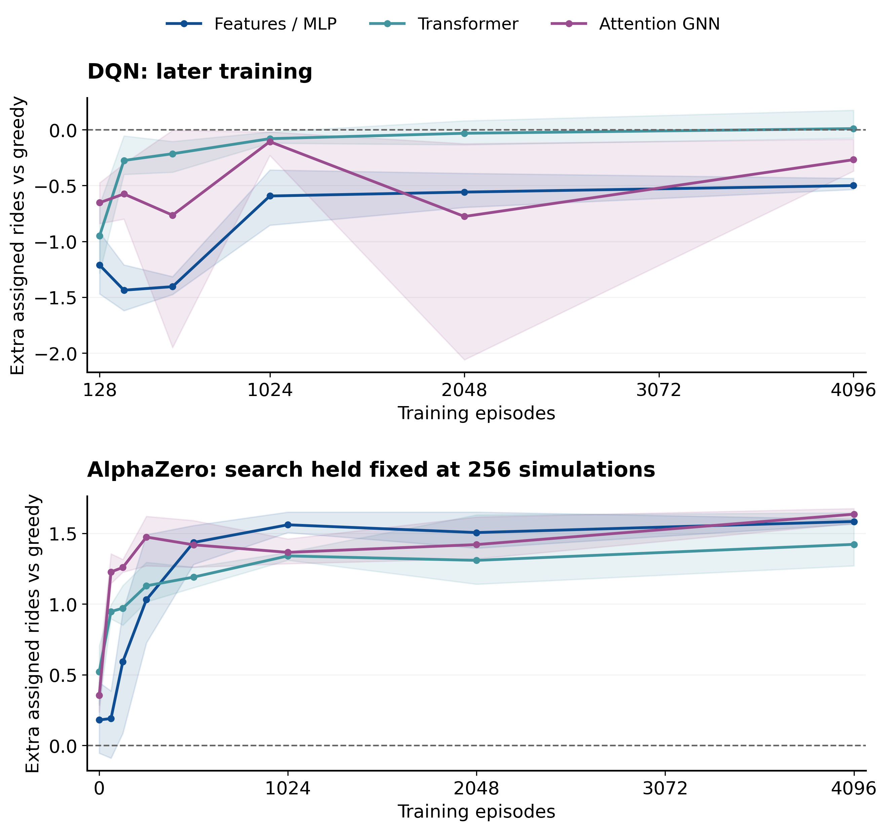

Reinforcement learning · An experimental study
Can reinforcement learning assign more rides than greedy?
A practical experiment with DQN, AlphaZero-style search, and three ways to represent a fleet
A booking arrives. Two vans can serve it. One insertion adds slightly less driving time, so we choose that van.
It sounds reasonable. But what if a later request can only use that same van?
We started this research with a simple question: can a learned decision-maker recognize these future conflicts and assign more rides than a greedy algorithm?
The answer was encouraging, with a qualification. Our AlphaZero-style approach, which combines a neural network with search, consistently improved ride counts on the synthetic scenarios we tested. DQN learned, but did not become a broadly better alternative to greedy. The most useful lesson was understanding what search contributed, and what learning alone did not achieve.
The main text follows the experiment from decisions to results. Expand the technical notes for the training equations and architecture details.
A small decision with a long consequence
Consider one van and three requests. An early request needs a long trip. Two requests processed later need short trips during that same period. The long trip conflicts with both short trips, while the two short trips can be served together.
Accepting the first request produces one assigned ride. Rejecting it leaves room for two.
A rejection can therefore be the better assignment decision. But rejecting every long ride would also be a mistake: sometimes there are no conflicting requests worth preserving capacity for. We need to distinguish those situations.
Our objective reflects this tradeoff: assign as many rides as possible, then minimize van time among equally good assignments. A lower-cost plan can help preserve capacity, but saving driving time is secondary to serving another ride.
We initially explored learning which local-search operation to run inside an optimizer. Those experiments did not establish a reliable advantage. To study the decision more directly, we changed the formulation: process one request at a time and choose a van or rejection.
What the agent knows and controls
Each scenario contains 60 requests and eight vans. The agent considers requests in a fixed order. For the current request, its actions are the feasible vans plus rejection.
An existing assignment solver checks whether a van can serve the request and constructs the insertion. The network chooses between these candidates. Once a request is accepted, the agent cannot unassign it or transfer it to another van.
The state consists of the current request and its position in the sequence, the vans and their planned stops, and the remaining requests. Locations, time windows, capacities, route order, and van eligibility describe the constraints. Candidate insertion information tells the model what assigning the current request would change. An action mask excludes infeasible vans; rejection is always legal. With eight vans, there are nine possible action slots, even when fewer are legal.
Applying an action commits its candidate plan and advances to the next request. Rejecting leaves the fleet plan unchanged, but still advances the request sequence. An episode ends after all 60 requests have been considered. These are simulated planning steps, not seconds of vehicles moving on a road.
There is an important detail: the final experiment exposes all future requests to the agent. This is advance-booking planning. Vans have schedules but do not physically move while we make decisions. We are not claiming to predict unknown real-time demand.
That makes the experiment a useful test of planning: given the same known future, which method uses it effectively?
Greedy provides a strong, inexpensive baseline. It always accepts when possible, selecting the feasible van with the smallest added van time. It does not explicitly examine what that choice will do to later requests.
Turning the objective into a reward
Each step earns the increase in assigned rides, minus a small penalty for the increase in total van time. Rejection earns zero immediately. It can still be worthwhile if it enables more assignments later. Van time here means the sum of planned route spans, including waiting within a route, rather than a monetary cost.
We use no discounting: a ride accepted near the end of the episode counts just as much as one accepted near the beginning. Adding all step rewards gives the change in the final plan's score. This connects the feedback used for training to the objective we actually care about.
The exact reward and why one ride dominates van time
Define the plan score as F(s) = assigned rides − van seconds / 16,001. The experiment enforces a fleet-duration bound of 16,000 seconds for eight vans. The step reward is r = F(next state) − F(current state), and the discount factor is γ = 1.
Because the entire duration penalty is smaller than one ride, any complete feasible plan with an additional ride scores higher, regardless of its van time. For example, accepting a ride that adds 160 seconds earns approximately 0.99; rejecting earns 0. If rejection later enables two such acceptances, its eventual return is approximately 1.98.
This preserves the lexicographic ordering of complete deterministic plans under the enforced bound. It does not guarantee strict lexicographic ordering of expected outcomes for stochastic policies. We therefore report ride counts and van time separately.
DQN learns a score for each choice
A Deep Q-Network, or DQN, estimates how much total reward an action will lead to, including its future consequences. This idea comes from deep Q-learning.
In our setting, it asks: “If I assign this request to van A, how good will the rest of the plan be?” It asks the same question for van B and for rejection. At evaluation time, it chooses the legal action with the largest predicted score.
During training, DQN mixes two behaviors: choosing its highest-scoring legal action and sampling a random legal action. This is epsilon-greedy exploration: the probability of a random choice decreases during early training. Evaluation uses no such exploration.
How does it learn those scores? The agent stores experience in a replay buffer, then trains on randomly sampled older decisions. Reusing experience makes each simulated episode more useful and reduces the dependence between consecutive training samples. Crucially, the prediction being corrected is for the action actually taken in that recorded state. It need not be the action the current network would choose now.
For each sampled decision, the target combines rewards actually observed over the next few steps with a network estimate of what remains afterward. Suppose the stored action was rejection, its current prediction is 1.2, and the resulting target is 2.0. Training moves that rejection score toward 2.0. It does not compare the prediction only with rejection's immediate reward of zero.
Our implementation uses five-step Double DQN: it combines five observed steps with an estimate of the remaining return. One network selects the future action; a slower-changing target network evaluates it, helping reduce overly optimistic estimates. The key idea stays the same: learn the future consequences well enough to choose directly, without searching a tree at decision time.
One episode means planning an entire 60-request scenario. It is one practice problem, not one neural-network update.
The DQN target, loss, and target network
For a replay record starting at state s with recorded action a, let R₅ be the sum of the next five rewards and s′ the resulting state. The online network selects a* = argmax over legal b of Q_online(s′, b). The target is y = R₅ + Q_target(s′, a*). Near the episode's end, use the remaining rewards and omit the future term if the episode has finished.
The loss is Huber(Q_online(s, a) − y), averaged over the sampled batch. Huber loss is quadratic for small errors and linear for large errors. Gradients update the online prediction, not the target y. We periodically copy online weights into the target network so the target changes less rapidly.
Ordinary DQN also has a target network. The distinctive Double DQN choice is using the online network to select a* and the target network to evaluate it. Five-step returns are a separate choice: they expose more observed consequences before bootstrapping, at the cost of more dependence on the intervening exploratory actions.
The experiment uses batches of 16 replay records, 16 updates per episode, and a target-network copy every 32 updates. This is off-policy learning: replay can contain actions from older, more exploratory policies. It is not supervised learning from optimal solutions.
AlphaZero adds a chance to think before acting
DQN must rely on its predicted action scores. Our AlphaZero-style approach combines learned guidance with explicit lookahead.
The network has two outputs. The policy suggests which actions look promising. The value estimates how much reward can still be obtained from the current state. They share a state representation; they need not be two separate networks.
Before committing to a booking decision, Monte Carlo Tree Search (MCTS) repeatedly explores possible continuations:
- Choose a branch to investigate. The choice balances the return found so far with an exploration bonus. The policy gives larger bonuses to promising actions, while visit counts reduce the bonus for branches already explored heavily.
- Simulate another booking decision. The assignment solver produces the resulting plan, and the next request becomes current.
- Estimate the unexplored future. At a newly reached state, the value head supplies an estimate, so search usually stops before finishing the entire scenario.
- Update the path. The estimated future reward, together with the rewards along the path, updates the actions that led there.
At evaluation time, we execute the root action visited most often during search. The policy influences the search; it does not directly dictate the final action.
A budget of 256 simulations means repeating this exploration 256 times for the current decision. It does not mean exploring 256 levels deep or opening the whole tree. The paths can have different depths. Although the name is Monte Carlo Tree Search, our guided version uses neural leaf estimates rather than random rollouts to the end.
Training closes the loop. Search produces a distribution of action visits, which becomes the policy's training target. After the episode finishes, the reward actually obtained from each state onward becomes the value target. A better network can guide later searches more effectively, and those searches generate new training examples.
For example, suppose 64 training simulations visit van A 40 times, van B 16 times, and rejection eight times. The policy target is [0.625, 0.25, 0.125], not simply “van A is correct.” If the episode later earns 12.8 reward from that state onward, 12.8 is its value target before normalization. Search teaches the policy where to look; completed episodes teach the value head what was actually achieved.
Training adds random noise to the root policy prior and samples from visit counts for the first 20 decisions, encouraging exploration. Evaluation removes that noise and chooses the most-visited root action. Neither mode requires looking all the way to the end in every search simulation.
The search rule and the two training losses
At each tree node, select the legal action maximizing Q_tree(s, a) + 1.5 × P(s, a) × √(N(s) + 1) / (1 + N(s, a)). P is the network's policy prior; N counts search visits. Q_tree is the mean return backed up through that edge. It is a search statistic, distinct from DQN's neural Q prediction. An unvisited edge initially uses the node's value estimate.
Each simulation follows existing branches until it reaches a new child or a terminal state. A new child gets a policy and value from the network. A terminal child has remaining value zero. Backing up adds each edge's immediate reward to the downstream return and updates edge totals and counts. Each simulation expands at most one new child; 256 simulations therefore do not enumerate the full decision tree. We start a fresh search for each real decision.
The policy loss is cross-entropy against normalized visit counts: −Σₐ π_search(a|s) log p_network(a|s). The value loss is squared error against the episode's realized remaining return divided by 60. Their sum trains the shared network. The policy learns to imitate search; we do not use a policy-gradient update. At search time, we convert value predictions back into reward units.
This is a single-agent adaptation of AlphaZero's learning-and-search loop. There is no opponent or alternating-player sign flip: we accumulate booking rewards. The transition model is our existing solver, not a learned dynamics network. Calling it “AlphaZero-style” describes that adaptation rather than an exact reproduction of the board-game system.
We trained with 64 simulations per decision, then evaluated the same networks using policy-only decisions or search budgets of 16, 64, and 256. This lets us separate the effect of training from the amount of thinking allowed at decision time.
Giving the network a useful picture of the fleet
The learning algorithm is only part of the design. We also need a representation that makes future conflicts visible.
We compared three approaches:
| Representation | Intuition |
|---|---|
| Features and an MLP (multilayer perceptron) | Give a feedforward network a compact dashboard: the current request, candidate van, added van time, route statistics, and summaries of future demand. |
| Transformer | Represent requests, vans, and scheduled stops as individual tokens. Attention lets each token gather relevant information from the others. |
| Attention GNN (graph neural network) | Connect those objects through explicit relationships, such as a stop belonging to a van or a request being eligible for it. Information first travels along these graph connections. |
The MLP scores one engineered feature row per action using shared weights. It sees demand counts and summaries, including how much future demand is eligible for each van. It does not retain every future request as a separate object.
For the Transformer, a token is a numerical description of one object: a current or future request, a van, or a scheduled pickup or drop-off stop. Two self-attention layers let those descriptions exchange information. A van's representation can therefore incorporate upcoming requests competing for it.
We then create one action query per van, plus one for rejection. Each combines the current request, the candidate van, insertion features such as added van time, and planning progress. Cross-attention lets each query read the encoded tokens. A scoring head turns the resulting action representation into either a DQN value or an AlphaZero policy logit. A logit is converted into a probability by a softmax over legal actions.
The GNN uses the same objects but restricts its initial message passing to typed edges: adjacent route stops, pickup and drop-off of the same ride, van–stop ownership, request–van eligibility, and neighboring requests in the sequence. Two graph layers propagate information across these connections. The final action queries still attend globally to the encoded objects.
Future request–van edges mean static eligibility, not proof that a future insertion is feasible. Actual feasibility depends on the evolving plan and is checked by the solver. This distinction prevents the graph from quietly receiving an oracle that the Transformer lacks.
Both the Transformer and GNN use attention to build a representation for each candidate action. The GNN is therefore an attention-based graph network. Its distinctive feature is which objects can exchange messages during the graph layers.
The engineered features compress information that the other two retain as separate objects. So this comparison tests practical representation choices, not architecture alone with perfectly identical information.
Q, K, V, attention heads, and the architecture we used
In attention, a query Q describes what information a receiver is looking for. A key K describes what a source can be matched on. A value V carries the information that source contributes. Learned linear projections create these vectors. Similarities between queries and keys become softmax weights, which form a weighted sum of the values.
Within a self-attention layer, queries, keys, and values come from the same token collection. At action readout, queries come from candidate actions while keys and values come from the encoded state tokens: that is cross-attention. These Q and V symbols are unrelated to the RL functions Q(s,a) and V(s).
We project 24 input features per token into width 64 and use two layers with four attention heads. Four heads means four learned attention subspaces, not four actions. There are nine action queries for eight vans plus rejection; each query uses all four heads. Transformer attention includes learned relationship biases. GNN attention also masks out non-neighbors in its graph layers.
The Transformer and GNN use the same width, depth, head count, and action readout, with matched initial weights. They do not use a mean/max pooling readout. For AlphaZero, an additional learned state query attends to the tokens and feeds the scalar value head. The feature MLP uses 177 inputs per action; its AlphaZero value head reads the rejection row, which includes global summaries. The graph implementation uses dense masked attention, so it does not establish a sparse-computation speed advantage.
Testing beyond one convenient example
We used four synthetic scenario families: geographically clustered demand, requests restricted to particular vans, staggered van shifts, and the long-trip-versus-short-trips bottleneck described earlier. Bottleneck scenarios included controls where accepting the long trip was appropriate, so “always reject long trips” was not a solution.
We trained both specialists on individual families and mixed models on all four. Specialists received 1,024 episodes each; mixed models received 4,096, cycling through the four families. Each configuration used three training seeds—independent initializations and exploration randomness. Final comparisons used the same 200 held-out scenarios per family, and separate validation scenarios tracked learning during training. Repeating a test scenario across model seeds does not make it a new independent scenario.
We fixed the evaluation checkpoints in advance. We also kept disappointing seeds in the results. Otherwise, choosing a favorable training run could easily look like an algorithmic improvement.
What worked
The clearest gains came from AlphaZero-style search with 256 simulations per decision. It improved average held-out ride count in every final family, representation, and training-seed comparison, for both specialist and mixed training.
As one representative result, the mixed GNN model increased the average from 37.13 to 38.55 assigned rides per scenario: about 1.42 additional rides, or 3.8%, averaged over three seeds and the four equally weighted families.

DQN generally finished near or below greedy. The learned AlphaZero policy alone also captured only a small part of the search benefit. For the mixed GNN, policy-only gained about 0.03 rides, compared with 0.72 at 64 simulations and 1.42 at 256.
There was no universal representation winner. GNN had the highest final mixed average at the largest search budget, but other representations won in particular families or training conditions. Mixing all families during training was useful in some comparisons and harmful in others.
Did learning help, or did we just search more?
A trained search beating greedy does not, by itself, prove that training was useful. Search is already doing additional work.
We therefore also compared trained and untrained networks with the same search budget on the same validation scenarios. At 256 simulations, training improved 35 of 36 specialist comparisons and 33 of 36 mixed family-by-seed comparisons. That supports a real contribution from learned guidance, although this exact initialized-versus-trained comparison still needs confirmation on the held-out test set.


DQN also improved greatly over its initial behavior. But learning from initialization and beating greedy are different tests. Longer training did not reliably close the gap: some DQN configurations improved, while others got worse.
Our interpretation is that precise decision ranking matters more than a plausible-looking value estimate. Two actions may have similar total returns, yet reversing their order can lose a ride. This is a hypothesis about the remaining difficulty, not a complete diagnosis of every failed model. Likewise, rejecting feasible requests is not evidence of good planning unless those rejections improve the eventual outcome.
What if we learn the value of a state instead?
In a smaller pilot on clustered and bottleneck scenarios, we tested a different division of work. Instead of predicting Q(s,a) directly, a network predicts V(s): how much reward remains from this state. To choose an action, simulate each legal successor and compare immediate reward + V(next state). This uses the known transition model for one-step lookahead, rather than learning an action-value head or building an MCTS tree.
We tried two training targets with all three representations. Bellman training takes the best immediate-reward-plus-estimated-future score over legal successors. Monte Carlo training uses the return actually collected from that state until the episode ends. The first relies on another value estimate; the second relies on the quality of the continuation actually played. Neither produced a broad advantage over greedy in this pilot.
Why the two value targets answer different questions
For Bellman training, the target is y = max over legal a of [r(s,a) + V_target(next(s,a))]. We enumerate the legal successors using the solver, take the maximum, and fit the current state's value toward it. Terminal states have remaining value zero. Repeating this aims to approximate an optimal value function.
For Monte Carlo training, y = sum of rewards actually observed from s to the end. No network estimate enters that target. But exploratory actions, including those from older policies in replay, influence the observed outcome. It is not a label for the best achievable return. A good state followed by poor decisions can receive a low target.
Both methods regress a neural value prediction toward these targets with squared error; values are normalized by 60 during fitting. At evaluation, both choose the successor with the largest immediate reward plus predicted value. Thus the action rule is the same, while the source of training labels differs.
The methods can be distinguished by what they learn and what work they do when a request must be assigned:
| Method | Learned output | Evaluation decision |
|---|---|---|
| DQN | A future-return score for each action | Highest legal Q(s,a) |
| State-value pilot | One future-return score per state | Simulate each successor; maximize r + V(s′) |
| AlphaZero policy only | Action probabilities, learned from search | Highest-probability legal action |
| AlphaZero with MCTS | Action probabilities and state value | Run guided search; choose the most-visited root action |
All methods still use the assignment solver to construct legal candidates. “No search” for DQN means no additional multistep lookahead at decision time, not no solver work at all.
What this tells us
The strongest finding is that learned guidance combined with explicit search can improve booking decisions in this known-future setting. Learning a direct controller was harder: a network could improve substantially during training without surpassing the simple greedy baseline.
The gain has a price. Search repeatedly calls the assignment solver, and the strongest configuration is substantially slower. We have not yet established an advantage over other lookahead methods at equal runtime. Nor do synthetic booking results establish a production improvement. Van-time improvements were also mixed when methods tied on ride count.
We still cannot confidently attribute the benefit to the learned value head alone. Earlier diagnostics suggested that a trained policy prior with a simple value estimate retained much of the benefit. Separating those contributions is a focused next experiment.
For this study, the useful lesson is concrete: the formulation of the decision problem, the information exposed to the agent, and the amount of search available all shaped the result. The successful approach gave the model both a view of upcoming demand and a way to test its choices before committing.
For more background, see Policies, Values, and Planning and the Transformer guide. Figures follow the conventions in figures4papers.